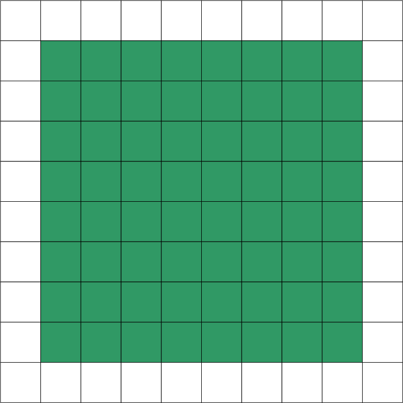
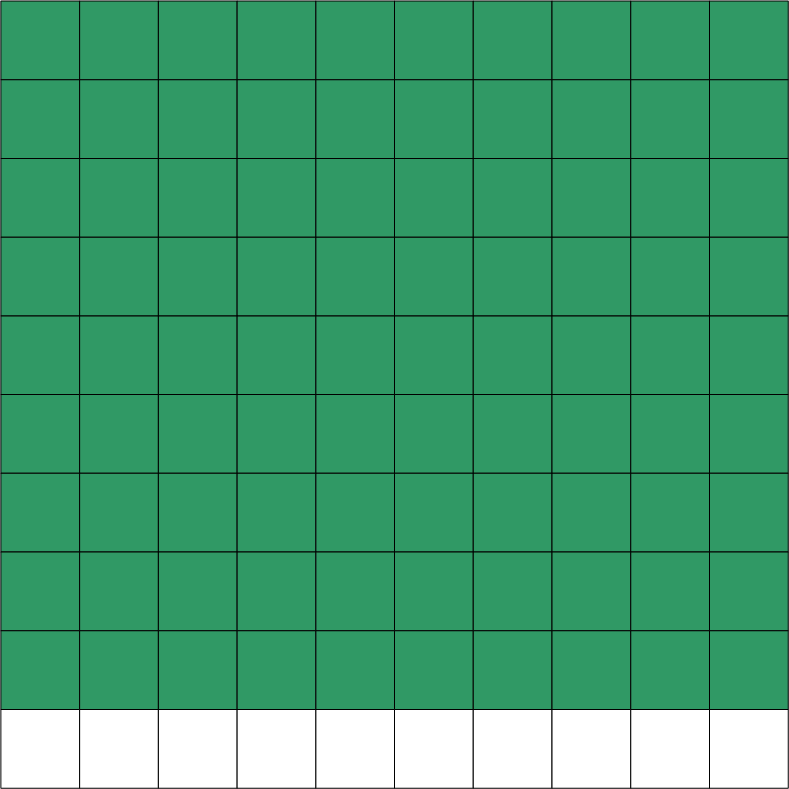
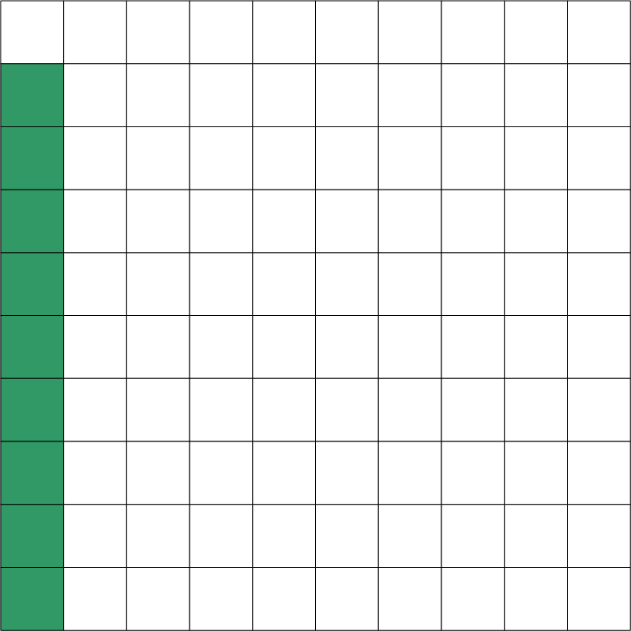
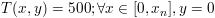
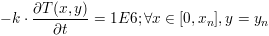
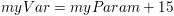

Core module
Models
Models
have the following properties:
- Name:
string (read-only)
Defines a name of an object (“Temperature” for instance) - CanonicalName:
string
(read-only)
It is a method use to describe a location of the object (“HeatExchanger.Temperature” for instance means that the object Temperature belongs to the parent object HeatExchanger). Object names are separated by dot symbols (“.”) - Description: string
- Domains: daeDomain list
- Parameters: daeParameter list
- Variables: daeVariable list
- Equations: daeEquation list
- Ports: daePort list
- ChildModels: daeModel list
- PortArrays: daePortArray list
- ChildModelArrays: daeModelArray list
- InitialConditionMode: daeeInitialConditionMode
The most important functions are:
- ConnectPorts
- SetReportingOn
- sum, product, integral, average
- d, dt
- CreateEquation
- IF, ELSE_IF, ELSE, END_IF
- STN, STATE, SWITCH_TO, END_STN
Every user model has to implement two functions: __init__ and DeclareEquations. __init__ is the constructor and all parameters, distribution domains, variables, ports, and child models must be declared here. DeclareEquations function is used to declare equations and state transition networks.
Models in pyDAE can be
defined by the following statement:
class myModel(daeModel):
def __init__(self, Name, Parent = None):
daeModel.__init__(self, Name, Parent)
... (here go declarations of domains, parameters, variables, ports, etc)
def DeclareEquations(self):
... (here go declarations of equations and state transitions)
Details of how to declare and use parameters, distribution domains, variables, ports, equations, state transition networks (STN) and child models are given in the following sections.
Equations
DAE Tools introduce two
types of equations: ordinary and distributed.
A residual expression of distributed equations is valid on every point
in distributed domains that the equations is
distriibuted on. The most important equation properties are:
- Name: string (read-only)
- CanonicalName: string (read-only)
- Description: string
- Domains: daeDomain list (read-only)
- Residual: adouble
Declaring equations
The following statement is used in pyDAE to declare an ordinary equation:
eq = model.CreateEquation("MyEquation")
while to declare a distributed equation the next statemets are used:
eq = model.CreateEquation("MyEquation")
d = eq.DistributeOnDomain(myDomain, eClosedClosed)
Equations can be distributed on a whole domain or on a part of it. Currently there are 7 options:
- Distribute on a closed domain - analogous to: x ∈ [ x0, xn ]
- Distribute on a left open domain - analogous to: x ∈ ( x0, xn ]
- Distribute on a right open domain - analogous to: x ∈ [ x0, xn )
- Distribute on a domain open on both sides - analogous to: x ∈ ( x0, xn )
- Distribute on the lower bound - only one point: x ∈ { x0 }
This option is useful for declaring boundary conditions.
- Distribute on the upper bound - only one point: x ∈ { xn
}
This option is useful for declaring boundary conditions.
- Custom array of points within a domain
where LB stands for the LowerBound and UB stands for the UpperBound
of the domain. An overview of various bounds is given in Figure 1. Here we have an equation
which is distributed on two domains: x
and y and we can see various
available options. Green squares represent the intervals included in
the distributed equation, while white squares represent excluded
intervals.
 x: eClosedClosed; y: eClosedClosed x ∈ [ x0, xn ], y ∈ [ y0, yn ] |
 x: eOpenOpen; y: eOpenOpen x ∈ ( x0, xn ), y ∈ ( y0, yn ) |
 x: eClosedClosed; y: eOpenOpen x ∈ [ x0, xn ], y ∈ ( y0, yn ) |
 x: eClosedClosed; y: eOpenClosed x ∈ [ x0, xn ], y ∈ ( y0, yn ] |
|  x: LB; y: eClosedOpen x = x0, y ∈ [ y0, yn ) |
 x: LB; y: eClosedClosed x = x0, y ∈ [ y0, yn ] |
 x: UB; y: eClosedClosed x = xn, y ∈ [ y0, yn ] |
 x: LB; y: UB x = x0, y = yn |
Figure
1. Distributed equation bound examples
Defining equations (equation residual expression)
The following statement can be used in pyDAE to create a residual expression of the ordinary equation:
# Notation:
# - V1, V3, V14 are ordinary variables
eq.Residal = V14.dt() + V1() / (V14() + 2.5) + sin(3.14 * V3())
The above code translates into:

To define a residual expression of the distributed equation
the next statements can be used:
# Notation:
# - V1, V3 and V14 are distributed variables on domains X and Y
eq = model.CreateEquation("MyEquation")
x = eq.DistributeOnDomain(X, eClosedClosed)
y = eq.DistributeOnDomain(Y, eOpenOpen)
eq.Residal = V14.dt(x,y) + V1(x,y) / ( V14(x,y) + 2.5) + sin(3.14 * V3(x,y) )
The above code translates into:

Defining boundary
conditions
Assume that we have a simple heat conduction through a very thin
rectangular plate. At one side (Y = 0) we have a constant
temperature (500 K) while at the opposide end we have a constant flux
(1E6 W/m2). The problem can be defined by the
following statements:
# Notation:
# - T is a variable distributed on domains X and Y
# - ro, k, and cp are parameters
eq = model.CreateEquation("MyEquation")
x = eq.DistributeOnDomain(X, eClosedClosed)
y = eq.DistributeOnDomain(Y, eOpenOpen)
eq.Residual = ro() * cp() * T.dt(x,y) - k() * ( T.d2(X,x,y) + T.d2(Y,x,y) )
We can note that the equation is defined on the domain Y, which is open on both ends. Now we have to specify the boundary conditions (2 additional equations). To do so, the following statements can be used:
# "Left" boundary conditions:
lbc = model.CreateEquation("Left_BC")
x = lbc.DistributeOnDomain(X, eClosedClosed)
y = lbc.DistributeOnDomain(Y, eLowerBound)
lbc.Residal = T(x,y) - 500 # Constant temperature (500 K)
# "Right" boundary conditions:
rbc = model.CreateEquation("Right_BC")
x = rbc.DistributeOnDomain(X, eClosedClosed)
y = rbc.DistributeOnDomain(Y, eUpperBound)
rbc.Residal = - k() * T.dt(x,y) - 1E6 # Constant flux (1E6 W/m2)
The above statements transform into:

and:

Distribution Domains
A distribution domain is a general term used
to define an array of different objects. Two types of domains exist:
arrays and distributed domains. Array is a synonym for a simple vector
of objects.
Distributed domains are most frequently used to model a spatial
distribution of parameters, variables and equations, but can be equally
used to
spatially
distribute just any other object (even ports and
models). Domains have the following properties:
- Name: string (read-only)
- CanonicalName: string (read-only)
- Description: string
- Type: daeeDomainType (read-only; array or distributed)
- NumberOfIntervals: unsigned integer (read-only)
- NumberOfPoints: unsigned integer (read-only)
- Points: list of floats
- LowerBound: float (read-only)
- UpperBound: float (read-only)
Distributed domains also have:
- DiscretizationMethod:
daeeDiscretizationMethod (read-only)
Currently backward finite difference (BFDM), forward finite difference (FFDM) and center finite difference method (CFDM) are implemented.
- DiscretizationOrder:
unsigned integer (read-only)
At the moment, only the 2nd order is supported.
There is a difference between number of points in domain and number of intervals. Number of intervals is a number of points (if it is array) or a number of finite difference elements (if it is distributed domain). Number of points is actual number of points in the domain. If it is array then they are equal. If it is distributed, and the scheme is one of finite differences for instance, it is equal to number of intervals + 1.
The most important functions are:
- CreateArray for creating a simple array
- CreateDistributed for
creating a distributed array
- operator [] for getting a value of the point within domain for a given index (used only to construct equation residuals)
- Overloaded operator () for creating daeIndexRange object (used only to construct equation residuals: as an argument of functions array, dt_array, d_array, d2_array)
- GetNumPyArray for getting the point values as a numpy one-dimensional array
The process of creating domains is two-fold: first you declare a domain in the model and then you define it (by assigning its properties) in the simulation.
Declaring a domain
The following statement is used to declare a domain:
myDomain = daeDomain("myDomain", Parent, "Description")
Defining a domain
The following statement is used to define a distributed domain:
# Center finite diff, 2nd order, 10 elements, Bounds: 0.0 to 1.0
myDomain.CreateDistributed(eCFDM, 2, 10, 0.0, 1.0)
while to define an array:
# Array of 10 elements
myDomain.CreateArray(10)
Non-uniform grids
In certain situations it is not desired to have a uniform distribution of the points within the given interval (LowerBound, UpperBound). In these cases, a non-uniform grid can be specified by the following statement:
# First create a distributed domain
myDomain.CreateDistributed(eCFDM, 2, 10, 0.0, 1.0)
# The original 11 points are: [0.0, 0.1, 0.2, 0.3, 0.4, 0.5, 0.6, 0.7, 0.8, 0.9, 1.0]
# If we are have a stiff profile at the beginning of the domain,
# then we can place more points there
myDomain.Points = [0.0, 0.05, 0.10, 0.15, 0.20, 0.25, 0.30, 0.35, 0.40, 0.60, 1.00
The comparison of the effects of uniform and non-uniform grids is given in Figure 2. (a simple heat conduction problem from the Tutorial3 has been served as a basis for comparison). Here we have the following cases:
- Blue line (normal case, 10 intervals): uniform grid - a very
rough prediction
- Red line (10 intervals): more points at the beginning of the domain
- Black line (100 intervals): uniform-grid (closer to the
analytical
solution)

on the numerical solution
We can clearly observe that we get much more precise results by
using denser grid at the beginning of the domain.
Using domains
NOTE: It is important to understand that all functions in this section are used ONLY to construct equation residuals and NOT to access the real (raw) data.
I) To get a value of the point within the domain at the given index we can use operator []. For instance if we want variable myVar to be equal to the sixth point (indexing in python and c/c++ starts at 0) in the domain myDomain, we can write:
# Notation:
# - eq is a daeEquation object
# - myDomain is daeDomain object
# - myVar is an daeVariable object
eq.Residual = myVar() - myDomain[5]
The above statement translates into:

II) daeDomain operator () returns the daeIndexRange object which is used as an argument of functions array, dt_array, d_array and d2_array in daeParameter and daeVariable classes to obtain an array of parameter/variable values, or an array of variable time (or partial) derivatives.
More details on parameter/variable arrays will be given in the following sections.
Parameters
Parameters are time invariant quantities that will not change during simulation. Usually a good choice what should be a parameter is a physical constant, number of discretization points in a domain etc. Parameters have the following properties:
- Name: string (read-only)
- CanonicalName: string (read-only)
- Description: string
- Type: daeeParameterType (read-only; real, integer, boolean)
- Domains: daeDomain list
The most important functions are:
- Overloaded operator () for getting the parameter value (used only to construct equation residuals)
- Overloaded function array for getting an array of values (used only to construct equation residuals as an argument of functions like sum, product etc)
- Overloaded functions SetValue and GetValue for access to the parameter's raw data
- GetNumPyArray for getting the values as a numpy multidimensional array
The process of creating parameters is two-fold: first you declare a
parameter in the model and then you define it (by assigning its value)
in the simulation.
Declaring a parameter
Parameters are declared in a model constructor (__init__ function). An ordinary parameter can be declared by the following statement:
myParam = daeParameter("myParam", eReal, Parent, "Description")
Parameters can be distributed on domains. A distributed parameter can be declared by the next statement:
myParam = daeParameter("myParam", eReal, Parent, "Description")
myParam.DistributeOnDomain(myDomain)
Here, argument Parent can be either daeModel
or daePort. Currently only
eReal type is supported (others are ignored and used identically as the
eReal type).
Defining a parameter
Parameters are defined in a simulation class (SetUpParametersAndDomains function). To set a value of an ordinary parameter:
myParam.SetValue(1.0)
To set a value of distributed parameters (one-dimensional for example):
for i in range(0, myDomain.NumberOfPoints)
myParam.SetValue(i, 1.0)
Using parameters
NOTE: It is important to understand that all functions in this section are used ONLY to construct equation residuals and NOT to access the real (raw) data.
I) To get a value of the ordinary parameter the operator () can be used. For instance, if we want variable myVar to be equal to the sum of the value of the parameter myParam and 15, we can write the following statement:
# Notation:
# - eq is a daeEquation object
# - myParam is an ordinary daeParameter object (not distributed)
# - myVar is an ordinary daeVariable (not distributed)
eq.Residual = myVar() - myParam() - 15
This code translates into:

II) To get a value of a distributed parameter we can again use operator (). For instance, if we want distributed variable myVar to be equal to the sum of the value of the parameter myParam and 15 at each point of the domain myDomain, we need an equation for each point in the myDomain and we can write:
# Notation:
# - myDomain is daeDomain object
# - n is the number of points in the myDomain
# - eq is a daeEquation object distributed on the myDomain
# - d is daeDEDI object (used to iterate through the domain points)
# - myParam is daeParameter object distributed on the myDomain
# - myVar is daeVariable object distributed on the myDomain
d = eq.DistributeOnDomain(myDomain, eClosedClosed)
eq.Residual = myVar(d) - myParam(d) - 15
This code translates into n equations:

which is equivalent to writing (in pseudo-code):
for d = 0 to n:
myVar(d) = myParam(d) + 15
which internally transforms into n separate equations.
Obviously, a parameter can be distributed on more than one domain. In that case we can use identical functions which accept two arguments:
# Notation:
# - myDomain1, myDomain2 are daeDomain objects
# - n is the number of points in the myDomain1
# - m is the number of points in the myDomain2
# - eq is a daeEquation object distributed on the domains myDomain1 and myDomain2
# - d is daeDEDI object (used to iterate through the domain points)
# - myParam is daeParameter object distributed on the myDomain1 and myDomain2
# - myVar is daeVariable object distributed on the myDomaina and myDomain2
d1 = eq.DistributeOnDomain(myDomain1, eClosedClosed)
d2 = eq.DistributeOnDomain(myDomain2, eClosedClosed)
eq.Residual = myVar(d1,d2) – myParam(d1,d2) – 15
The above statement translates into:

III) To get an array of parameter values we can use the function array which returns the adouble_array object. Arrays of values can only be used in conjunction with mathematical functions that operate on adouble_array objects: sum, product, sqrt, sin, cos, min, max, log, log10 etc. For instance, if we want variable myVar to be equal to the sum of values of the parameter myParam for all points in the domain myDomain, we can use the function sum (defined in daeModel class) which accepts results of the array function (defined in daeParameter class). Arguments for the array function are daeIndexRange objects obtained by the call to daeDomain's operator (). Thus, we can write the following statement:
# Notation:
# - myDomain is daeDomain object
# - n is the number of points in the domain myDomain
# - eq is daeEquation object
# - myVar is daeVariable object
# - myParam is daeParameter object distributed on the myDomain
eq.Residual = myVar() - sum( myParam.array( myDomain() ) )
This code translates into:
The above example could be also written in the following form:
# points_range is daeDomainRange object
points_range = daeDomainRange(myDomain)
# arr is adouble_array object
arr = myVar2.array(points_range)
# Finally:
eq.Residual = myVar() - sum(arr)
On the other hand, if we want variable myVar to be equal to the sum of values of the parameter myParam only for certain points in the myDomain, there are two ways to do it:
# Notation:
# - myDomain is daeDomain object
# - n is the number of points in the domain myDomain
# - eq is a daeEquation object
# - myVar is an ordinary daeVariable object
# - myParam is a daeParameter object distributed on the myDomain
# 1) For a given array of points; the points must be in the range [0,n-1]
eq.Residual = myVar() - sum( myParam.array( myDomain( [0, 5, 12] ) ) )
# 2) For a given slice of points in the domain;
# slices are defined by 3 arguments: start_index, end_index, step
# in this example: start_index = 1
# end_index = 10
# step = 2
eq.Residual = myVar() - sum( myParam.array( myDomain(1, 10, 2) ) )
The code sample 1) translates into:

The code sample 2) translates into:

NOTE: One may argue that the function array calls can be somewhat simpler and directly accept python lists or slices as its arguments. For instance it would be possible to write:
eq.Residual = myVar() - sum( myParam.array( [0, 1, 3] ) )
or:
eq.Residual = myVar() - sum( myParam.array( slice(1,10,2) ) )
However, that would be more error prone since it does not
check whether a valid domain is used for that index and whether
specified indexes lay
within the domain bounds (which should be done by the user).
Variable Types
Variable types are used to describe variables. The most important properties are:
- Name: string
- Units: string
- LowerBound: float
- UpperBound: float
- InitialGuess: float
- AbsoluteTolerance: float
Declaration of variable types is usually done outside of model definitions (as global variables).
Declaring a variable type
To declare a variable type:
# Temperature, units: Kelvin, limits: 100 – 1000K, Def.value: 273K, Abs.Tol: 1E-5
typeTemperature = daeVariableType("Temperature", "K", 100, 1000, 273, 1E-5)
Variables
Variables are time variant quantities (state variables). The most
important properties are:
- Name: string (read-only)
- CanonicalName: string (read-only)
- Description: string
- Type: daeVariableType object
- Domains: daeDomain list
- ReportingOn: boolean
The most important functions are:
- Overloaded operator () for getting the variable value/time derivative/partial derivative (used only to construct equation residuals)
- Overloaded functions array, dt_array, d_array, and d2_array for getting an array of values/time derivatives/partial derivatives (used only to construct equation residuals as an argument of functions like sum, product etc)
- Overloaded functions AssignValue to fix degrees of freedom of the model
- Overloaded functions ReAssignValue to change a value of a fixed variable
- Overloaded functions SetValue and GetValue for access to the variable's raw data
- Overloaded function SetInitialGuess for setting an initial guess of the variable
- Overloaded function SetInitialCondition for setting an initial condition of the variable
- Overloaded function ReSetInitialCondition for re-setting an initial condition of the variable
- Overloaded function SetAbsoluteTolerances for setting an absolute tolerance of the variable
- GetNumPyArray for getting the values as a numpy multidimensional array
The process of creating variables is two-fold: first you declare a variable in the model and then you define it (by assigning its value) in the simulation.
Declaring a variable
Variables are declared in a model constructor (__init__ function).
To declare an ordinary variable:
myVar = daeVariable("myVar", variableType, Parent, "Description")
Variables can be distributed on domains. To declare a distributed variable:
myVar = daeVariable("myVar", variableType, Parent, "Description")
myVar.DistributeOnDomain(myDomain)
Here, argument Parent can be either daeModel
or daePort.
Assigning a variable value (setting the degrees of freedom of a model)
Degrees of freedom can be fixed in a simulation class in SetUpVariables
function by assigning the value of a variable. Assigning the
value of an ordinary variables can be done by the following statement:
myVar.AssignValue(1.0)
while the assigning the value of a distributed variable
(one-dimensional for example) can be done by the next statement:
for i in range(myDomain.NumberOfPoints)
myVar.AssignValue(i, 1.0)
Re-assigning a variable value
Sometime during a simulation it is necessary to re-assign
the variable value. This can be done by the following statement:
myVar.ReAssignValue(1.0)
... re-assign or re-initialize some other variables too (optional)
simulation.ReInitialize()
NOTE: After re-assigning or after
re-initializing variable(s) the function ReInitialize in the simulation
object MUST be called before continuing with the
simulation!
Accessing a variable raw data
Functions GetValue/SetValue
access the variable raw data and should
be used directly with a great care!!!
NOTE: ONLY USE THIS FUNCTION IF YOU EXACTLY KNOW
WHAT ARE YOU DOING AND
THE POSSIBLE IMPLICATIONS!!
Setting the value of ordinary variables can be done by the following
statement::
myVar.SetValue(1.0)
while setting the value of a distributed variable can be done by:
for i in range(myDomain.NumberOfPoints)
myVar.SetValue(i, 1.0)
Setting an initial guess
Initial guesses can be set in a simulation class in SetUpVariables
function. An initial guess of an ordinary variable can be set by the
following statement:
myVar.SetInitialGuess(1.0)
while the initial guess of a distributed variable by:
for i in range(myDomain.NumberOfPoints)
myVar.SetInitialGuess(i, 1.0)
Setting an initial guess of a distributed variable to a single value for all points in all domains can be done by the following statement:
myVar.SetInitialGuesses(1.0)
Setting an initial condition
Initial conditions can be set in a simulation class in SetUpVariables
function. In DAE Tools there
are two modes. You can set either set an algebraic value or use the
eSteadyState flag.
This is controlled by the property InitialConditionMode
in the simulation class (can be eAlgebraicValuesProvided or eSteadyState).
However,
only the algebraic parts can be set at the moment. An initial
condition of an ordinary variable can be set by the following statement:
myVar.SetInitialCondition(1.0)
while the initial guess of a distributed variable by:
for i in range(myDomain.NumberOfPoints)
myVar.SetInitialCondition(i, 1.0)
Re-setting an initial condition
Sometime during a simulation it is necessary to re-initialize the variable value. This can be done by the following statement:
myVar.ReSetInitialCondition(1.0)
... re-assign or re-initialize some other variables too (optional)
simulation.ReInitialize()
NOTE: After re-assigning or after
re-initializing the variable values the function ReInitialize in the simulation
object MUST be called before continuing with the
simulation!
Setting an absolute tolerance
Absolute tolerances can be set in a simulation class in SetUpVariables
function by the following statement:
myVar.SetAbsoluteTolerances(1E-5)
Getting a variable value
NOTE: It is important to understand that all
functions in this and
all following sections are used ONLY
to construct equation residuals and NOT
no to access the
real (raw) data.
For the examples how to get a variable value see the sub-sections I -
III in the section Parameters-Using
Parameters. Operator () in
daeVariable class behaves in
the
same way as the operator () in
daeParameter class.
Getting a variable time derivative
I) To get a time derivative
of the ordinary variable the
function dt can be used. For
example, if we want a time derivative of the variable
myVar to be equal to some constant, let's say 1.0, we can write:
# Notation:
# - eq is a daeEquation object
# - myVar is an ordinary daeVariable (not distributed)
eq.Residual = myVar.dt() - 1
The above statement translates into:

II) Getting a time derivative of distributed variables is analogous to getting a parameter value (see the sub-section II in the section Parameters-Using Parameters). The function dt accepts the same arguments and it is called in the same way as the operator () in daeParameter class.
III) Getting an array of time
derivatives of distributed variables is
analogous to getting an array of parameter values (see the sub-section III in the section Parameters-Using
Parameters). The function dt_array
accepts the same
arguments and it is called in the same way as the function array in
daeParameter class.
Note: Sometime a derivative of
an expression is needed. In that case the function dt from the daeModel class can be
used.
# Notation:
# - eq is a daeEquation object
# - myVar1 is an ordinary daeVariable (not distributed)
# - myVar2 is an ordinary daeVariable (not distributed)
eq.Residual = model.dt( myVar1() + myVar2() )
Getting a variable partial derivative
It is possible to get a partial derivative only of the distributed
variables and only for a domain which is distributed (not an ordinary
array).
I) To get a partial derivative
of the variable per some domain, we can
use functions d or d2 (the function d calculates a
partial derivative
of the first order while the function d2
calculates a partial
derivative of the second order). For instance, if we want a first order
partial derivative of the variable myVar
to be equal to some constant,
let's say 1.0, we can write:
# Notation:
# - myDomain is daeDomain object
# - n is the number of points in the myDomain
# - eq is a daeEquation object distributed on the myDomain
# - d is daeDEDI object (used to iterate through the domain points)
# - myVar is daeVariable object distributed on the myDomain
d = eq.DistributeOnDomain(myDomain, eOpenOpen)
eq.Residual = myVar.d(myDomain, d) - 1
This code translates into:

Please note that the function myEquation is not distributed on the
whole myDomain (it does not include the bounds).
In the case we want to get a partial derivative of the second order we
can use the function d2 which
is called in the same fashion as the
function d:
d = eq.DistributeOnDomain(myDomain, eOpenOpen)
eq.Residual = myVar.d2(myDomain, d) - 1
which translates into:

II) To get an array of partial
derivatives we can use functions d_array
and d2_array which return the adouble_array object (the function
d_array returns an array of
partial derivatives of the first order
while the function d2_array
returns an array of partial derivatives of
the second order). Again these arrays can only be used in conjunction
with mathematical functions that operate on adouble_array objects: sum,
product, etc. For instance, if
we want variable myVar to be equal to
the minimal value in the array of partial derivatives of the variable
myVar2 for all points in the domain myDomain, we can use the function
min (defined in daeModel class) which accepts
arguments of type
adouble_array. Arguments for
the d_array function are daeIndexRange
objects obtained by the call to daeDomain
operator (). In this
particular example we need a minimum among partial derivatives for the
specified points (0, 1, and 3). Thus, we can write:
# Notation:
# - myDomain is daeDomain object
# - n is the number of points in the domain myDomain
# - eq is daeEquation object
# - myVar is daeVariable object
# - myVar2 is daeVariable object distributed on myDomain
eq.Residual = myVar() - min( myVar2.d_array(myDomain, myDomain( [0, 1, 3] ) )
The above code translates into:

Note: Sometime a partial
derivative of an expression is needed. In that case the function d from the daeModel class can be
used.
# Notation:
# - myDomain is daeDomain object
# - eq is a daeEquation object
# - myVar1 is an ordinary daeVariable (not distributed)
# - myVar2 is an ordinary daeVariable (not distributed)
eq.Residual = model.d( myVar1() + myVar2(), myDomain )
Ports
Ports are used to connect two instances of models. Like models,
ports
can contain domains, parameters and variables. The most important
properties are:
- Name: string (read-only)
- CanonicalName: string (read-only)
- Description: string
- Type: daeePortType (inlet, outlet, inlet-outlet)
- Domains: daeDomain list
- Parameters: daeParameter list
- Variables: daeVariable list
The most important functions are:
- SetReportingOn
Activity module
DataReporting module
Solver module